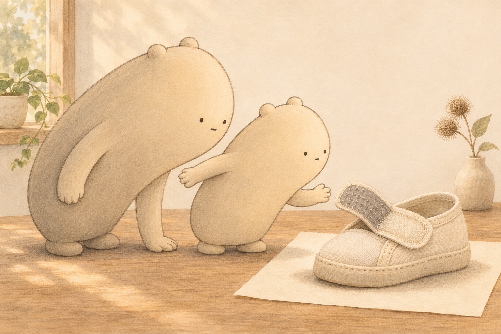
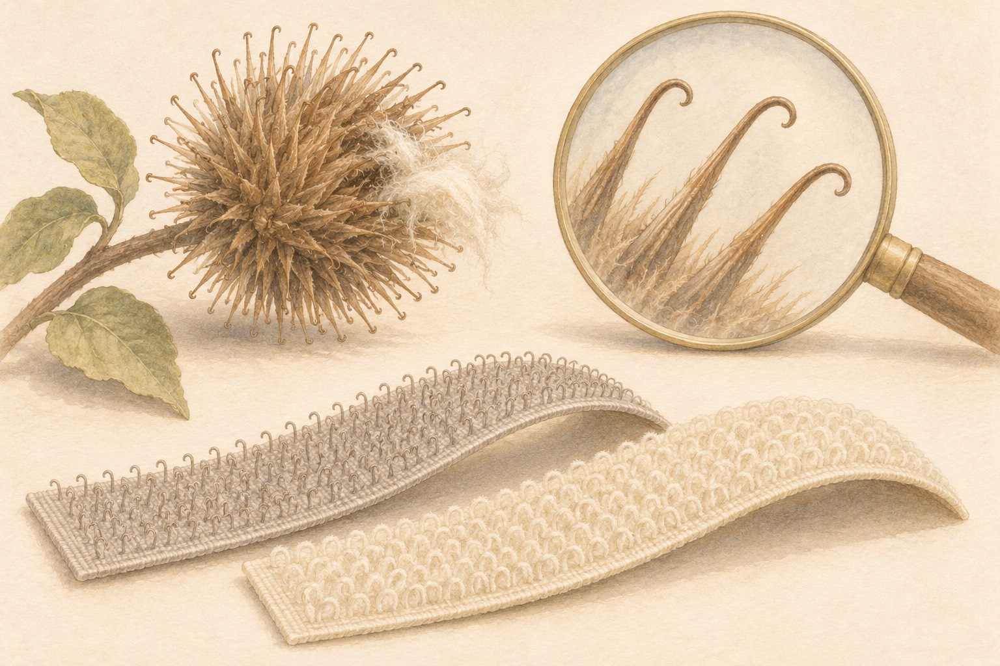
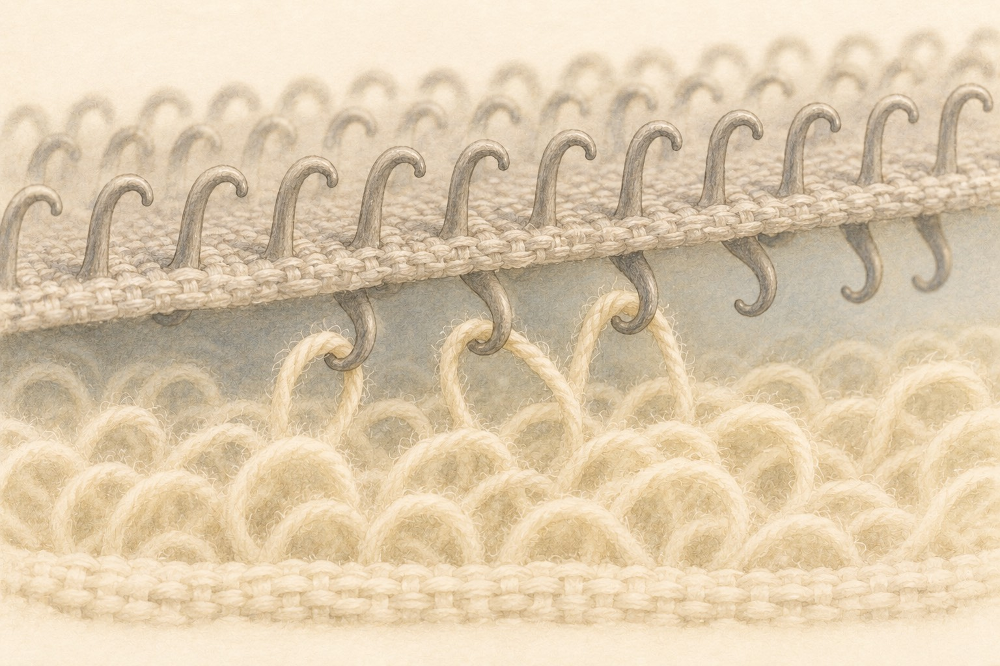
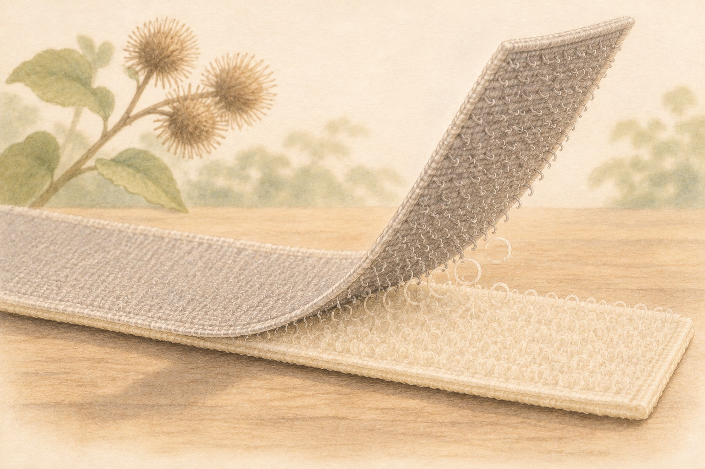
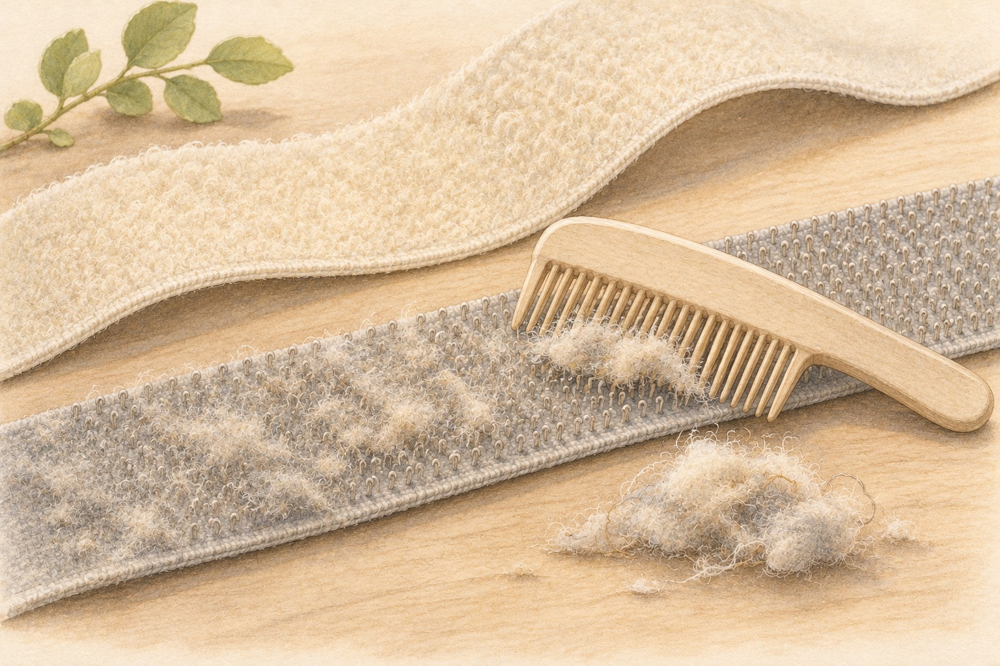
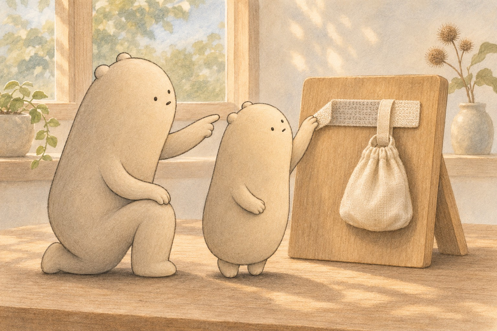

How can two soft strips of cloth hold on so tightly, then rip open?

Where shall we look?

A burr's spines end in tiny hooks.
Where did the idea come from?
Find the tiny hooks at the tips of the burr's spines.
A little explanation & something to try
A burr. In 1941, a Swiss engineer came home from a walk with burdock burrs stuck to his socks and his dog's fur. Under a microscope, each spine ended in a tiny hook. Burrs cling on purpose: animals carry their seeds to new places.
Try this. After a walk outdoors, look closely at your socks. Did any seeds hitch a ride? Look at one with a magnifying glass for hooks.

Stiff hooks above, soft loops below.
How do you make a tiny hook?
Compare the stiff hooks on top with the soft loops below.
A little explanation & something to try
You start with a loop. The first hooks were cotton and wore out. Nylon worked better: it was woven into loops, heated so the loops kept their shape, then a cutter snipped one side of each loop to leave a hook.
Try this. Bend a pipe cleaner into a small loop. Open one side a little so it becomes a hook. Can your hook catch a loop of yarn?

A peel opens just one thin line at a time.
Why does a peel open so easily?
Look at how thin the line is where the strip is letting go.
A little explanation & something to try
A sideways pull, called shear, makes every hook hold at once. A peel opens only one thin line of hooks at a time. The rrrip is hooks springing free, one row after another.
Try this. Press two strips together. Slide them apart sideways, then peel one corner. Which one takes less push? Listen to each.

Lint clogs the hooks; a comb lifts it out.
Why do old strips lose their grip?
Find the fuzz in the hooks and the clean part next to it.
A little explanation & something to try
Lint and fluff pack into the hooks, so they cannot reach the loops. A fine comb can lift the fuzz out, and the grip comes back.
Try this. Find a fuzzy strip on an old shoe or bag. Comb it gently with an old comb or toothbrush, then test the grip again.
Hook and loop counts
Compare and round counts of hooks, loops, burrs and peels.
Stiff hooks above, soft loops below.
Choose one problem and draw the tens as sticks and the ones as dots to check.
1.The engineer counts 48 hooks on one burr and 84 hooks on another. Put >, <, or = in the circle. What is the greater count (or the shared count if equal)?
48 ○ 84
A small hint
Compare tens first, then ones. When both counts match, use = and give that shared count.
2.Little Wonderer counts 63 hooks in one tiny square and 36 loops in another. Put >, <, or = in the circle. What is the greater count (or the shared count if equal)?
63 ○ 36
A small hint
Compare tens first, then ones. When both counts match, use = and give that shared count.
3.The big one counts 55 loops on one patch and 55 loops on a second patch. Put >, <, or = in the circle. What is the greater count (or the shared count if equal)?
55 ○ 55
A small hint
Compare tens first, then ones. When both counts match, use = and give that shared count.
4.Big Wonderer peels the shoe strap open 27 times. What is 27 rounded to the nearest ten?
27 → nearest ten: ___
A small hint
Look at the ones. With 5 or more, go up to the next ten; otherwise go down.
5.The bag hangs on the strip for 74 seconds before the little one peels it. What is 74 rounded to the nearest ten?
74 → nearest ten: ___
A small hint
Look at the ones. With 5 or more, go up to the next ten; otherwise go down.
6.A comb lifts 45 bits of lint out of an old strip. What is 45 rounded to the nearest ten?
45 → nearest ten: ___
A small hint
Look at the ones. With 5 or more, go up to the next ten; otherwise go down.
A thousand tiny hooks
How Velcro Works
A strap that rips
Little Wonderer pulls open a shoe strap. Rrrip! The little one presses it shut, and it holds tight again. Big Wonderer leans in. The strap has two sides, one rough and one soft. People call it Velcro, but that is a company name. Its plain name is hook and loop. What is hiding in that sound?
What is the plain name for this kind of strap?
A burr on a walk
In 1941, a Swiss engineer went for a walk with his dog. Afterward, burdock burrs clung to his socks and the dog's fur. He looked at a burr under a microscope. Each spine ended in a tiny hook. The hooks caught on loops of thread and fur. Could cloth copy that trick?
What did the engineer see under the microscope?
Hooks meet loops
Look very closely at the two sides. The rough side holds rows of stiff little hooks, like tiny bent canes. The soft side is a fuzzy tangle of thread loops. Press them together, and hundreds of hooks catch hundreds of loops. One hook is weak, but many together are strong. The name Velcro mixes French words for velvet and hook.
Why is one hook weak but many hooks strong?
Pull or peel?
Try pulling the two sides apart sideways, like sliding. It is very hard, because every hook pulls at the same time. Now peel back one corner. It opens easily, because only one thin line of hooks lets go at a time. The rrrip is hooks springing free, row after row. A sideways pull is called shear.
Why is a peel easier than a sideways pull?

A bag that hangs
A strip on a little board holds a small cloth bag. Big Wonderer points at it. The bag pulls straight down along the strip, so all the hooks share the load, and nothing slips. Then Little Wonderer reaches up and peels one corner. Rrrip! A few hooks at a time let go, and the bag slides off.
Why does the bag hang without slipping?
When grip fades
Making the hooks took years of trying. The inventor wove nylon loops, heated them to set their shape, then snipped one side of each loop to leave a hook. After many uses, lint fills the hooks, so they cannot reach the loops. A fine comb can lift the fuzz out. Why would a cleaner strip grip better?